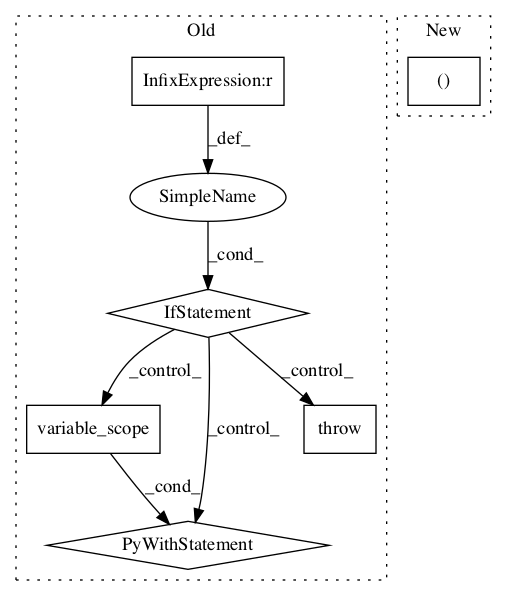

3d305831a0edd1288cc2f94f81debbdc359d7bb3,tensorlayer/layers/lambda_layers.py,Lambda,__init__,#Lambda#Any#Any#Any#Any#,61

Before Change
logging.info("Lambda %s" % self.name)
if fn is None:
raise AssertionError("The `fn` argument cannot be None")
with tf.compat.v1.variable_scope(name) as vs:
self.outputs = fn(self.inputs, **self.fn_args)
variables = tf.compat.v1.get_collection(TF_GRAPHKEYS_VARIABLES, scope=vs.name)
self._add_layers(self.outputs)
self._add_params(variables)
After Change
fn_name = repr(self.fn)
except:
fn_name = "name not available"
logging.info("Lambda %s: func: %s, len_weights: %s" % (self.name, fn_name, len(self._weights)))
self.build()
self._built = True
In pattern: SUPERPATTERN
Frequency: 3
Non-data size: 6
Instances
Project Name: tensorlayer/tensorlayer
Commit Name: 3d305831a0edd1288cc2f94f81debbdc359d7bb3
Time:
Author: null
File Name: tensorlayer/layers/lambda_layers.py
Class Name: Lambda
Method Name: __init__
Project Name: asyml/texar
Commit Name: 54fed17211d0b077579fba58e93075aee9312668
Time:
Author: null
File Name: texar/modules/decoders/transformer_decoders.py
Class Name: TransformerDecoder
Method Name: __init__
Project Name: asyml/texar
Commit Name: 54fed17211d0b077579fba58e93075aee9312668
Time:
Author: null
File Name: texar/modules/decoders/rnn_decoder_base.py
Class Name: RNNDecoderBase
Method Name: __init__